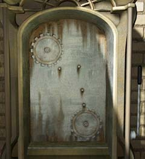
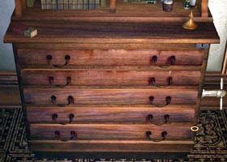
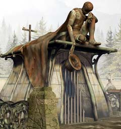
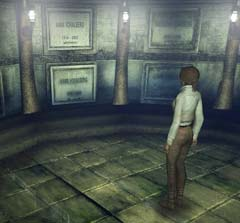

| 概要 | 地図 | |
| 淡いヒント集 | ヒント集 | 的確なヒント集 |
| 攻略最短ルート | Syberia 攻略へ |
| << 前の段階へ | 地域選択へ | 次の段階へ >> |
バラディレーン
|
教会

エレベーターである。見ての通り、歯車を取り付けなくてはならない。ホテルに落ちている歯車を4つはめれば問題がない。その後、横のレバーを引くとエレベーターが動き出す。 このようにはめればよい。 
室内に取り付けられた十字架は、左右にスライドするようになっている。十字架の裏の壁はくりぬかれ、中には小さな鍵が隠されている。この鍵は、部屋にある引き出しの鍵である。

引き出しは、右上の鍵穴に鍵を差し込まないと開かない。中には3枚のパンチカード以外にも重要なアイテムが入っている。上から三段目の引き出しを開け、横に付いているハンドルを回すと隠された空間が出てくる。 この隠し場所には鍵が入っている。この鍵は墓地のカラクリ人形にはめる鍵である。 
教会の上にあるカラクリ人形は、パンチカードを入れられる。それに応じた曲を演奏するのだが、あるパンチカードを入れることによって墓地のカラクリ人形が動き出す。三枚のうちどれで動かすのは秘密だ。

教会の上にあるカラクリ人形と連動し、墓地のカラクリ人形が帽子をぬいだ。この帽子の中をよく見ると、鍵穴が見えるはずだ。教会の引き出しに隠された鍵をはめてみよう。柵がおり、地下にある死体安置所らしき部屋へ続く階段が現れる。

死体安置所には棺桶が置いてある。よく調べるとハンスの棺桶があるはずだ。ハンスは死んでいないので、中には何が入っているのだろうか? 引き出すことで、新聞記事とシリンダーが見つかるだろう。このシリンダーは、オルゴールに取り付けることで重要な効果を生み出せるものである。 忘れずに持っていこう。 |
| << 前の段階へ | 地域選択へ | 次の段階へ >> |
| 概要 | 地図 | |
| 淡いヒント集 | ヒント集 | 的確なヒント集 |
| 攻略最短ルート | Syberia 攻略へ |
Syberia
| 目次へ戻る | ページの上部へ |